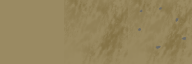
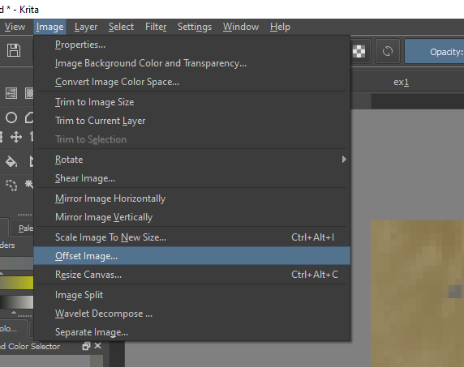
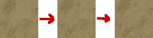
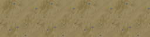

A core component of any top-down pixel game is the tiling pixel art that composes the world.
In this instructable I will show you one of the many ways to make these infinite, seamless textures.
Requirements
Time
~ 15 minutes
Software
Photoshop or something similar
Choosing a Style
It is important to consider what style you would like to work with. A simple style will be
easier to work with. Why is this?
For a texture to be placed as a seamless pattern, all the pixels where a texture block ends must align with
the texture tile next to it. If the texture pattern is simple, it will be easier to align the pixels.
Notice how the simple solid color of the above "sand" texture doesn't require effort to tile - the
pixel colors already match. Compare that to the background of this page.
Creating a Tile
After deciding on a style, we need to use an art program to create our first tile. Photoshop is popular, but
there are free softwares we can use as well such as Krita.
Set your canvas size to be a square: the number of pixels will determine how detail your tile will be. For now, I'll choose 64 x 64.
Now, lets create a tile. It could be whatever tile you'd like to make: I'm making sand for a path. We don't have to worry about the edge pixels yet.
For my sand tile, I've decided lay a base color, and use a brush to create a random, darker pattern on top of that. Finally, I added a couple rocks.

Offset and Blend
With our textures created we can perform a simple trick to make them infinitely tile-able.
First, save and open a copy of your texture.
Next, go into the image tab and select the option to offset the image. (In Photoshop, the sequence is Filter > Other > Offset.) Set the offset to be half of your image size in both axes.
This will offset the center of the image to the corners. In my case, it will be 32 pixels.

Now we can copy the layer our original image and paste it into our edited version. Make sure the edited version is on top.
Finally, select an eraser, turn the size and opacity down, and select the edited image layer.
Gently blend the two images together by erasing the offset layer. Be sure to eliminate the cross-shaped seam we created in the middle of the offset image
while integrating the pixels and patterns of the two images. Also, be careful not to erase any pixels from the very edge of the texture - this will create a new seam.

Now we have a texture that can be placed next to itself without creating a break in the flow of the texture. As you become more familiar with this technique it can be used to blend
an HD texture to create a realistic tile texture as well (although it is much more time-consuming.) I hope you enjoyed this walkthrough!

Flow Studio: HD offset technique (Photoshop)
Disclaimer: I do not own the rights to the following video